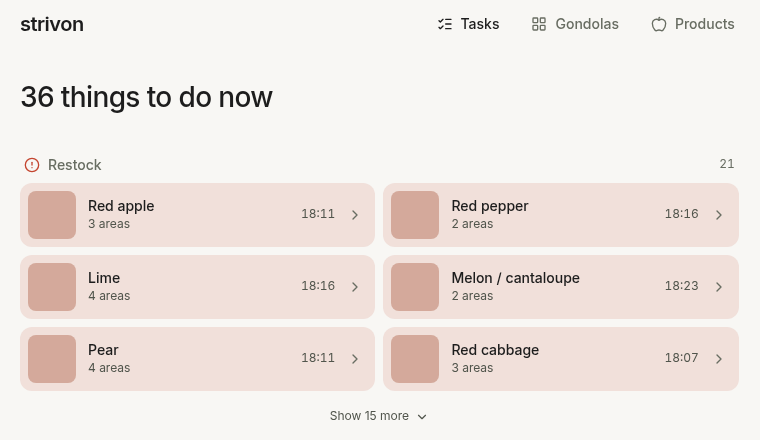
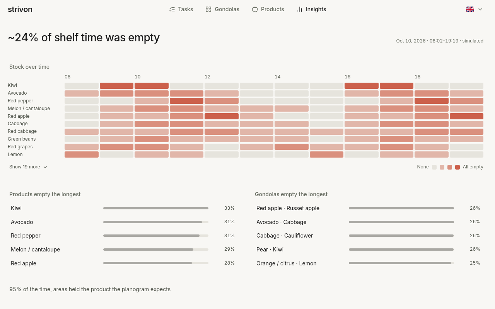

Every shelf tells you what it needs before it runs empty.
Ceiling cameras watch the fruit and vegetable shelves. Strivon compares what they see with the planogram and tells the staff what to restock and what to put back.
What staff see
One list for the whole store, grouped by what to do and ordered by what is gone the longest. Restock first, then move back, then leave alone.

How it works
- A camera looksEach gondola has a ceiling camera that takes a photo about once an hour.
- Each shelf area is checkedAgainst the planogram: is it holding the right product, and how full is it?
- Staff get the workWhat is empty, what is in the wrong place, and what can wait.
How the store is doing
For whoever runs the store: how much of the time shelves were empty, when it happened and where. Every figure that comes from photos taken an hour apart is marked as an estimate.

The screens above use invented shelves, so they show no challenge photos.
Team
JoséThe web app and the integration
MiguelThe AI pipeline
AndréEvaluation and data
LeonorLabelling, design and the pitch